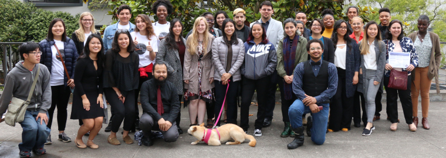

PINC Summer Program

Are you curious about research science? Interested in learning to code? Looking to learn a new coding language? Check out the PINC Summer Program! For more information please click here.
In the PINC Summer Program, students will work in small teams to learn new coding skills, and then apply those skills to a small collaborative research project. Along the way, students will be supported to improve their skills at reading the scientific literature, as well as science communication. The PINC Summer Program will culminate in a presentation of research results at the Summer Research Symposium. The PINC Summer Program grows out from the summer programs offered in years past.
Applications to the PINC Summer Program are available in March every year. If you have questions, don’t hesitate to contact Nicole Adelstein in chemistry, Pleuni Pennings in biology or Rori Rohlfs in biology.